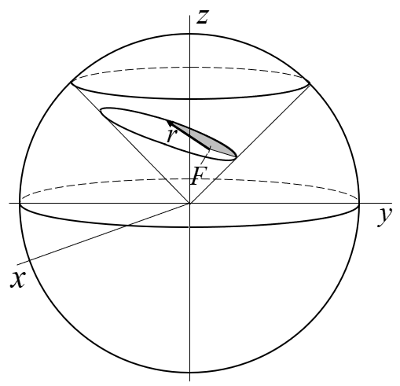
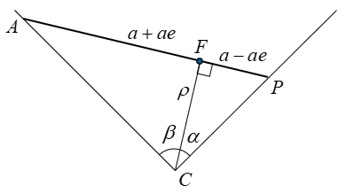
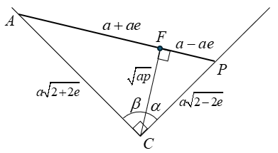
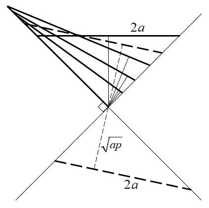
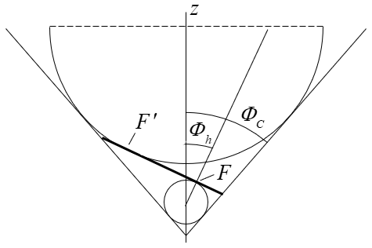
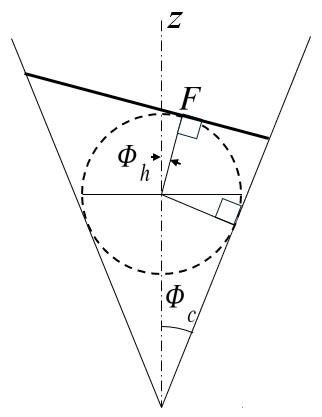

Section II
Elliptical orbit analysis and results
Classical analyses of elliptical orbits are two-dimensional, reflecting the fact that in the absence of other forces, orbital motion is confined to a plane. It is also well established that orbital geometries are conic sections, a consequence of the inverse-square gravitational force law. What is less commonly exploited is that this constraint can be built directly into a three-dimensional reference frame: rather than treating "planar motion" and "conic section" as two separate facts about the orbit, both can be captured at once by embedding the orbit in a cone, as introduced in Fig. F-1. Consistent with that construction, an elliptical orbit is shown here in a conical frame in Fig. E-1. The shaded area represents the area swept in equal times, per Kepler's second law, as a reminder that the geometric picture developed on this page is not a substitute for the orbit's dynamics, but a supporting structure that sits alongside it and, as later sections show, reproduces results like Kepler's equation directly from the cone's geometry.

Edge-View Derivation of ρ
A useful pattern emerges when the construction in Fig. E-1 is arranged so that a line through the primary focus, aligned with the angular momentum vector, extends to the cone apex. Fig. E-2 shows this in edge view, with known parameters and the unknown line denoted ρ.


Figure E-3 shows that ρ = \(\sqrt{ap}\), derived as follows. The right triangles in Fig. E-2 relate the apex angle to the angles α and β via the cotangent:
Applying the cotangent-sum identity and substituting for α and β gives, after simplification,
which rearranges to
A simplified solution is found when α + β = π/2: if the vertical line in Fig. E-3 is the cone's true axis, symmetry forces α = β = \(\Phi_c\), so α + β = π/2 and \(\Phi_c\) = 45° are the same statement. With \(\cot(\pi/2) = 0\), Eq. E-3 reduces directly to
This same length ρ reappears as CF in the Bridge Relation below. These are two names for the same segment, arrived at from two different auxiliary constructions.
An Equal-Energy Family
For a fixed semi-major axis a, equivalent to a fixed total specific energy of \(-\mu/2a\), the eccentricity e is free to range between the limiting cases of a circle (e = 0) and a degenerate linear trajectory (e = 1). Every intermediate value describes an ellipse of the same energy but a different shape. Fig. E-4 shows several members of this equal-energy family in edge view within the conical frame. All retain a rotational component about the focus except the linear limiting case, which is purely radial. In the vis-viva equation, it is the eccentricity-dependent term that varies across this family; the energy term itself is unchanged.

The Dandelin Construction, Specific to the Ellipse
Commonality introduced the Dandelin sphere construction in general terms, true for any conic section. Here it specializes with the apex labeled C, the cone's axis as the z-axis, and the two spheres tangent to the orbital plane at the primary focus F and empty focus F′.
Two different lines pass through the apex C. CF, used in the Bridge Relation below, runs along h and is perpendicular to the orbital plane. The cone's axis, which passes through the Dandelin sphere's center, is tilted relative to h for every non-circular conic. The two lines coincide only in the degenerate circular case. Because these are distinct segments from the same apex, not one line playing two roles, the sphere-tangency construction of F and the CF-perpendicular derivation of F are both valid descriptions of the same point. There's no conflict between them, only a visual difference in which line is drawn.

Spheres are tangent to the orbital plane at primary focus F and empty focus F′.
The smaller Dandelin sphere, near the apex C, is tangent to the cutting plane at the primary focus F. The larger sphere, farther from the apex, is tangent at the empty focus F′; only its lower hemisphere is drawn, since the rest of the sphere touches neither the cone nor the cutting plane and adds no geometric content. No separate parabolic figure is needed here: the three-orbit composite on the Framework page already shows that case.
Tilt Angle and the Cone Half-Angle

Fig. E-6 shows two different cones, with different half-angles \(\Phi_c\), each with its own correctly sized and positioned Dandelin sphere, cut by planes at different tilts \(\Phi_h\), producing the same ellipse. The cone's half-angle is not fixed by the ellipse it produces; a and e leave \(\Phi_c\) free.
What does constrain the geometry, in this framework, is not the cone's shape but the direction established in Fig. E-3: CF runs along h, perpendicular to the orbital plane. That is the physically meaningful constraint here, not the cone's apex angle.
This may be why over two thousand years of work on conic sections has never assigned the cone's apex angle a specific value for a given ellipse: none exists, absent some outside constraint like the one h provides.
Note: \(\Phi_h\) only needs to be determined at periapsis.
Since \(\Phi_c\) is free, this page fixes it at 45°, the same choice already made in Fig. F-1. That choice isn't forced by physics, a different half-angle would do just as well, but it supports further development. It lets \(\Phi_h\) alone track eccentricity across the entire elliptical range, meets the parabolic case exactly at \(\Phi_h = \Phi_c\) = 45°, and continues smoothly partway into the hyperbolic regime before a varying \(\Phi_c\) becomes necessary. Figs. E-2 and E-3 carry out the edge-view derivation of ρ = \(\sqrt{ap}\) in this fixed 45° conical frame.
Deriving sin(2Φh) = e
The same edge view that fixed ρ = \(\sqrt{ap}\) also pins down \(\Phi_h\) directly. With \(\Phi_c\) fixed at 45°, Fig. E-3's two generators sit at 45° from the axis, and CF sits at angle \(\Phi_h\) from that same axis, measured toward periapsis.
The distance from F to periapsis P is a(1 − e). CP, along the 45° generator, has length \(a\sqrt{2-2e}\): from \(CP^{2} = CF^{2} + FP^{2} = ap + a^{2}(1-e)^{2}\), and p = a(1 − e)(1 + e), this reduces to \(CP^{2} = 2a^{2}(1-e)\).
In right triangle CFP, the right angle is at F, since CF ⊥ the orbital plane and FP lies within it. The angle at C, between CP and CF, is (45° − \(\Phi_h\)), since CP sits at 45° from the axis and CF at \(\Phi_h\). So:
with the complementary angle giving
Applying the double-angle identity \(\cos(90^\circ - 2\Phi_h) = 1 - 2\sin^{2}(45^\circ - \Phi_h)\) and substituting Eq. E-5:
\[ \cos(90^\circ - 2\Phi_h) = 1 - (1-e) = e \]
Since \(\cos(90^\circ - 2\Phi_h) = \sin(2\Phi_h)\), this gives
matching Table F-1 and the Level 2 entry on the Commonality page.
The Bridge Relation
With the cone apex angle fixed at 90° (\(\Phi_c = \pi/4\), as established above), the edge-view derivation gives CF, the perpendicular distance from the apex to the orbital plane, as
Because CF is perpendicular to the entire orbital plane, not just to one point in it, it is perpendicular to the radius vector r for every satellite position. The triangle formed by the apex, focus F, and the satellite is therefore a right triangle at every point on the orbit, with legs CF = \(\sqrt{ap}\) and r, and hypotenuse R (the slant distance from apex to satellite):
R′, the component of R perpendicular to the cone's z-axis (rather than to the orbital plane), follows as a corollary. At the 90° apex angle, R′ = R/\(\sqrt{2}\), giving
Both relations hold at every point on the orbit: r and R both vary as the satellite moves, but ap is fixed for a given orbit, playing the same role as a geometric constant that the specific mechanical energy \(-\mu/(2a)\) plays as a physical constant.
Status for the other conic types. This is confirmed for the elliptical case only. The hyperbolic and parabolic pages are less developed, and a more general form of this relation, \(R^{2} = r^{2} + 2a(r-p) + R'^{2}\), has appeared in earlier framework notes without a matching derivation confirming it across all three conic types. Given that \(\Phi_c\) and \(\Phi_h\) swap roles between the elliptical and hyperbolic cases (Table F-1), the bridge relation should not be assumed to carry over unmodified; it needs to be re-derived from each type's own edge-view geometry once those pages mature, the same way ρ took a different closed form (\(\sqrt{ap}\), p, \(ae/\sqrt{e^{2}-1}\)) in each case while keeping the same geometric role.
[OPEN, no direction set] Carried forward as-is; no resolution attempted yet.
From Vis-Viva to Kepler's Equation1
The introduction noted that the geometric picture on this page sits alongside the orbit's dynamics rather than replacing it. This section makes that connection directly. Commonality develops the vis-viva relation together with conservation of angular momentum into a single integral, good for all three conic types (Eq. C-4, C-5):
\[ \int \frac{r\,dr}{\sqrt{2ar - ap \pm r^{2}}} = \sqrt{\frac{\mu}{a}} \int dt \]
with the minus sign for the elliptical case (\(\mathcal{E} = -\mu/2a\)). Substituting p = a(1 − e2) turns the quantity under the root into \(a^{2}e^{2} - (a-r)^{2}\), so the elliptical integral is
\[ \int \frac{r\,dr}{\sqrt{a^{2}e^{2} - (a-r)^{2}}} = \sqrt{\frac{\mu}{a}}\, t + C \]
Carrying out the integral gives
The inverse-sine term is the complement of the angle that actually interests us. Writing E = \(\cos^{-1}\!\left(\dfrac{a-r}{ae}\right)\) gives the standard eccentric-anomaly relation
Taking E = 0 at periapsis (t = 0) fixes the constant, so Eq. E-11 reduces to
Kepler's equation. It comes out directly from the same starting integral used for every conic type, with no separate argument needed for this one.
The same starting integral also covers the rectilinear (e = 1) case, and the vis-viva sign is what tells the two rectilinear limits apart. Setting p = 0 in Eq. C-4 collapses the rotational term and leaves a purely radial fall or escape; whether that motion closes back on itself or runs away is decided by which sign, \(-\mu/2a\) or \(+\mu/2a\), was substituted for \(\mathcal{E}\), the same sign choice that separates the elliptical and hyperbolic integrals above. Nothing about the integration method changes at e = 1; only the sign carried in from the energy does, which is why the rectilinear case falls out of the general result rather than needing a derivation of its own.